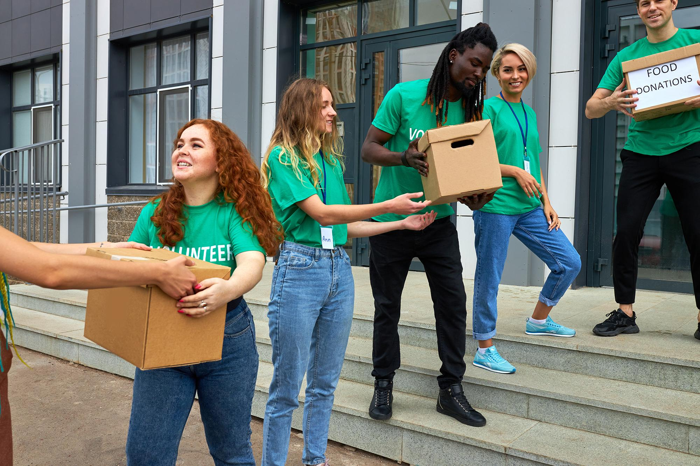
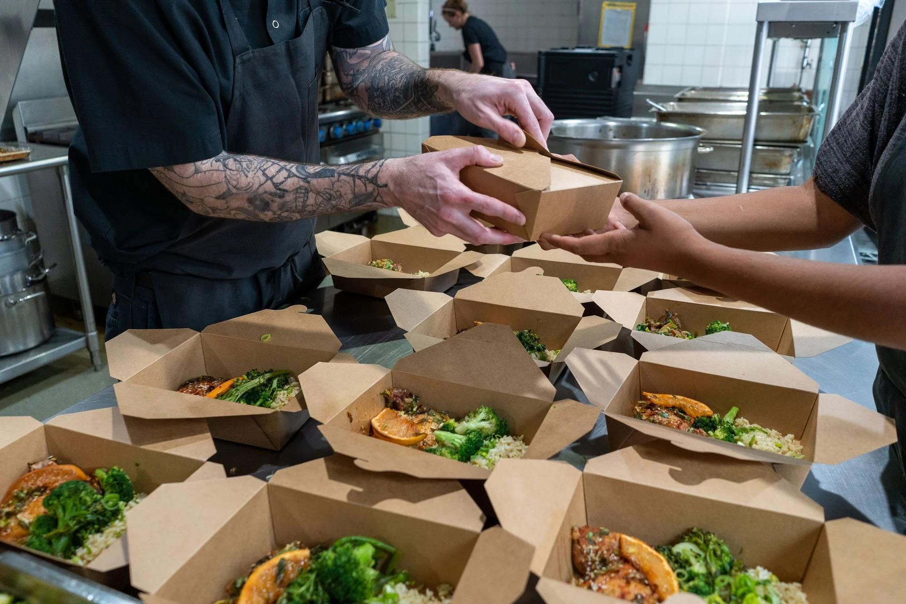
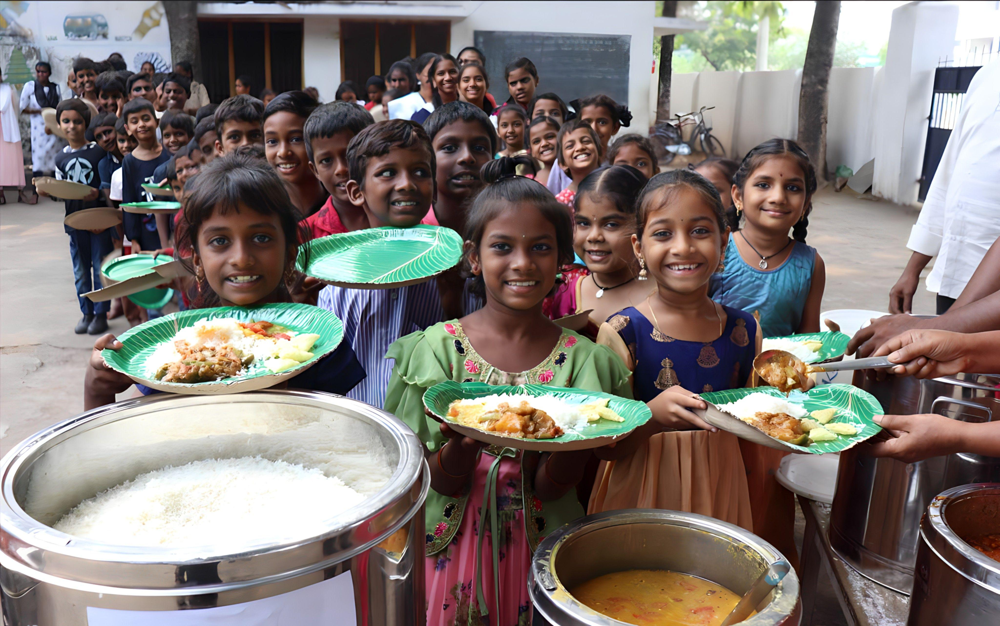
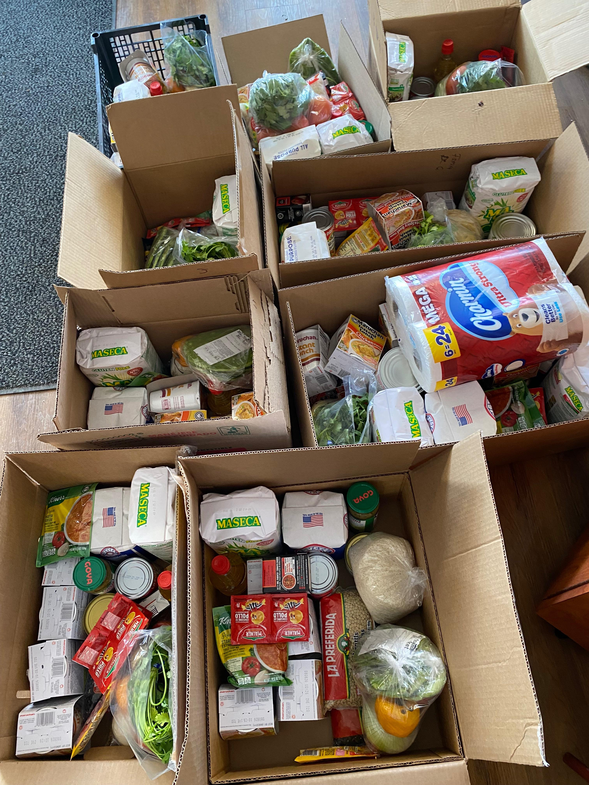
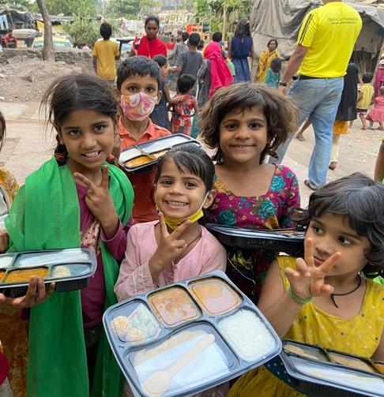
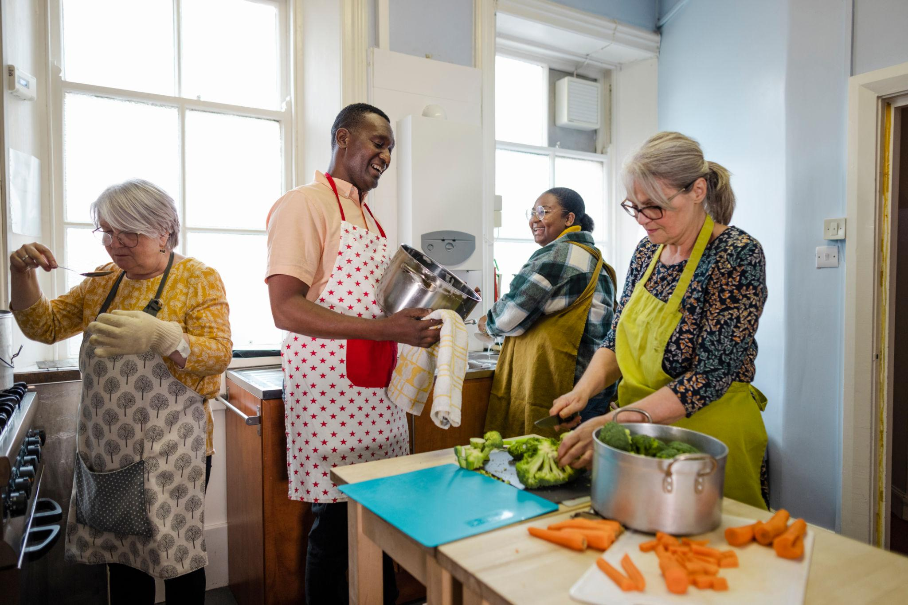

FoodBridge connects Restaurants, Convention Halls, Volunteers and NGOs to rescue surplus food and deliver it safely to poor families, street children and elderly people.


Every day thousands of kilograms of fresh food are wasted by restaurants and convention halls, while many people sleep hungry.
FoodBridge creates a bridge between food donors and volunteers so that surplus food reaches poor families, street children and elderly people before it is wasted.
Rescue extra food before it becomes waste.
Volunteers help distribute food to people.
Restaurant reports surplus food.
Wedding & event food can also be donated.
Nearby volunteers receive instant notification.
Volunteers collect food safely.
Food reaches poor people, street children and elderly people.
Collect extra food before it is wasted.
Restaurants can instantly post available surplus food.
Wedding and event organizers can donate remaining food.
Nearby volunteers receive notifications and collect food.
Find the nearest food donation quickly and efficiently.
Deliver food responsibly to people who truly need it.
Meals Rescued
Active Volunteers
Restaurants
Convention Halls
People Helped
Reduce food waste by creating a digital bridge between food donors and volunteers so that surplus food reaches people in need safely and quickly.
Build a Bangladesh where no edible food is wasted while people remain hungry.
We believe in honesty and transparency.
Less food waste means a healthier planet.
Volunteers are the heart of FoodBridge.
Every rescued meal can change someone's day.
Have surplus food or want to become a volunteer? Contact us today.
Sylhet, Bangladesh
+880 1700-000000
support@foodbridge.com
FoodBridge works with restaurants, convention halls, NGOs and volunteers to reduce food waste.
Restaurants can instantly report surplus food through FoodBridge.
Wedding and event organizers can donate extra meals safely.
NGOs help distribute rescued food to people in need.
Volunteers receive notifications and deliver food quickly.
Join FoodBridge today and help reduce food waste while bringing smiles to people who need it most.
Restaurants, convention halls and event organizers.
Poor families, street children, elderly people and homeless people.
Yes. Volunteers inspect food before distribution.
Publishes surplus food information.
Coordinates food collection.
Delivers food to people in need.
Manages the FoodBridge platform.
"FoodBridge helped us donate extra food instead of throwing it away."
"Receiving notifications makes food collection much faster."
"This platform can reduce food waste and help thousands of people."
Connecting Food With Hope...
When restaurants or convention halls publish available surplus food, nearby volunteers receive a notification and collect the food as quickly as possible.
A glimpse of how restaurants, convention halls, volunteers and communities work together.




A smart initiative to reduce food waste.
Helping build a sustainable Bangladesh.
Bringing people together through kindness.
Every extra meal can become someone's hope.
FoodBridge is a social impact platform designed to reduce food waste by connecting Restaurants, Convention Halls and Volunteers. The goal is to deliver surplus food safely to poor families, homeless people, street children and elderly people.
Version 1.0
Frontend Development
HTML • CSS • JavaScript